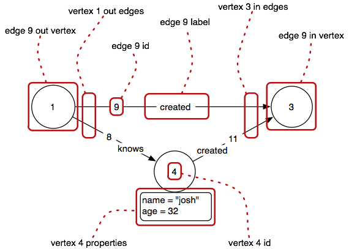

This section will present basic graph traversals by way of examples on the simple property graph diagrammed below.

gremlin> g = TinkerGraphFactory.createTinkerGraph()
==>tinkergraph[vertices:6 edges:6]
gremlin> v = g.v(1)
==>v[1]The symbol v denotes that the element is a vertex and 1 denotes the elements unique identifier. To determine all of the outgoing edges from the vertex, the following statement suffices.
gremlin> v.outE
==>e[7][1-knows->2]
==>e[9][1-created->3]
==>e[8][1-knows->4]As a convenience, Gremlin prints the outgoing and incoming vertex identifiers along with the edge label. To acquire the vertices at the head of these edges (known as the incoming vertices), apply another step in the path.
gremlin> v.outE.inV
==>v[2]
==>v[3]
==>v[4]It is important to note that in Gremlin, vertices are incident to edges and edges are incident to vertices. The reason for this will become apparent later when making use of element properties in path expressions. The reserved terms for denoting adjacency selection are the steps outE, inE, bothE, outV, inV, and bothV (see Gremlin Steps). The components of a property graph are diagrammed in the example sub-graph below.

The process of traversing a graph, in this manner, can continue indefinitely (granted, if there are loops in the graph).
gremlin> v.outE.inV.outE.inV
==>v[5]
==>v[3]There are the steps out, in, and both that skip over edges as such to jump from vertex to vertex.
gremlin> v.out.out
==>v[5]
==>v[3]Moreover, it is possible to make use of Groovy’s language to repeat patterns. For example, the previous example can be denoted as follows.
gremlin> list = [v]
gremlin> for(i in 1..2)
list = list._().out.collect{it}
gremlin> list
==>v[5]
==>v[3]This can also be done using the loop step.
gremlin> v.as('x').out.loop('x'){it.loops < 3}
==>v[5]
==>v[3]If the Gremlin graph data structure was only a directed graph, then outgoing/incoming edges and outgoing/incoming vertices would be the limits of what could be expressed. However, given that vertices and edges can have properties, it is possible to use these properties within a path expression. For example, suppose you want to know the name of vertex 1.
gremlin> v = g.v(1)
==>v[1]
gremlin> v.name
==>markoThe name construct denotes the property key name and returns the value of that key. The first component of the path is vertex 1. Thus, the name of vertex 1 is “marko.” Another, more complex example that uses vertex and edge properties is to determine the name of the vertices that vertex 1 knows and that are older than 30 years of age, is expressed as such.
gremlin> v.outE('knows').inV.filter{it.age > 30}.name
==>joshIn this expression, the filter{ } step serves to filter results of previous step in the path (a closure filter). Thus, v.outE is filtered to only those edges that have a label of “knows.” With respect to the diagrammed graph, this leaves only two edges. Next, the incoming vertices at the head of these two edges are determined and then filtered to only those whose age property is greater than 30. Given the diagram, this only leaves vertex 4. In the final segment of the path expression, the name of vertex 4 is selected and what is returned is “josh.”
To conclude, let’s do a more complicated graph traversal that uses backtracking and an in-line regular expression.
gremlin> v.out('knows').filter{it.age > 21}.as('x').name.filter{it.matches('jo.{2}|JO.{2}')}.back('x').age
==>32With the root vertex being vertex 1, this path expression returns the age of those vertices that vertex 1 knows, are older than 21, and whose names are 4 characters and start with a ‘jo’ or ‘JO’. While contrived, it demonstrates using closures to call functions on properties as well as backtracking to a vertex previously visited.
This expression does the same thing without backtracking. Both are provided in order to demonstrate the many ways in which to express the same thing.
gremlin> v.out('knows').filter{it.age > 21 & it.name.matches('jo.{2}|JO.{2}')}.age
==>32